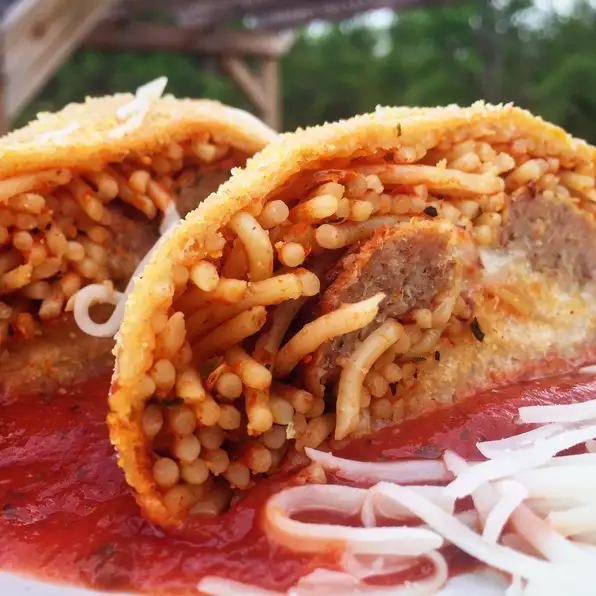

Spaghetti Bread

Description
A super fun twist on Spaghetti, Meatballs, and Garlic Bread, an extra great and easy dish for the kids.
Ingredients
- Cooking Spray
- 1/2 Tsp Cornmeal
- 16oz Package of Prepared Pizza Dough
- 1 1/2 Cups Cooked Spaghetti
- 1/4 Cup Spaghetti Sauce (or to taste)
- 6 Cooked Meatballs (or preferred amount)
- 1/2 Cup Shredded Mozzarella Cheese
- 2 Tbsp Melted Butter
- 1/2 Tsp Garlic Salt (or to taste)
Directions
- Preheat oven to 350 degrees F (175 degrees C). Spray a large baking sheet with cooking spray and sprinkle lightly with cornmeal.
- Roll pizza dough on a floured work surface into a 9x12-inch rectangle.
- Mix spaghetti with spaghetti sauce in a bowl until pasta is coated. Spread spaghetti and sauce down the center of the dough rectangle, leaving about 1 inch at the top and bottom uncovered. Spread meatballs in a line down the center of the spaghetti. Sprinkle mozzarella cheese over spaghetti and meatballs. Roll the dough over the filling, starting at a long edge. Pinch ends and seam tightly closed. Transfer roll to the prepared baking sheet.
- Bake in the preheated oven until crust is browned and filling is hot, 20 to 25 minutes. Brush roll with melted butter and sprinkle with garlic salt. Serve warm or cold.